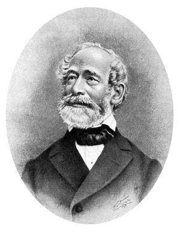

A MIKROSZKÓP
MIKROSZKÓPKÓPOK
A mikroszkóp egy optikai műszer, amelyet arra használunk, hogy a szemmel nem látható, apró dolgokat felnagyítsuk, és így szemmel is láthatóvá tegyük. A mikroszkópoknak több fajtája is létezik:
A hagyományos összetett mikroszkóp, vagy más néven biológiai mikroszkóp, több lencserendszerrel ellátott eszköz. Nagyon vékony dolgokat lehet vizsgálni velük, amelyeken a fény át tud haladni. A tárgy képe fordítva jelenik meg. Akár több, mint ezerszeres nagyítást is el lehet érni vele. Carl Zeiss és Ernst Abbe voltak, akik a 19. század második felében megalkották a most is használatos összetett mikroszkópokat, és lefektették annak matematikai, optikai alapjait. A Zeiss ma is fogalom az optikában, a mikroszkópok világában. A Zeiss mikroszkóp olyan, mint az autók között a Rolls-Royce!

Carl Zeiss (Kép forrása: Wikipedia)
A fénymikroszkópok másik fajtája a sztereomikroszkóp. Ezek mindig két szemes betekintést nyújtanak. Általában a tárgy felszínét világítják meg, és a visszaverődő fényt használják a nagyított kép megjelenítésére, így nincsen szükség a vizsgálandó dolog előkészítésére, hogy átengedje a fényt. Ezekkel a mikroszkópokkal általában kisebb nagyítás érhető el. Nagy különbség, hogy nem fordított, hanem irányhelyes képet hoznak létre, emiatt ilyen mikroszkópokat használnak például mütéteknél is.
A digitális kamerák fejlődésével elterjedtek az úgynevezett usb-mikroszkópok. Ezek tulajdonképpen digitális kamerák, amelyek képét, usb-csatlakozáson keresztül, digitális eszközön jelenítik meg. Ezek nem olyan teljesítményüek, mint az igazi fénymikroszkópok.
A fénymikroszkópok felbontó képességét, hogy mekkora nagyítást lehet velük elérni, behatárolja a fény hullámhossza. Ennek kiküszöbölésére találták fel az elektronmikroszkópot. Ebben nem fényt, hanem elektronsugárzást használnak, így akár több milliós nagyítás is elérhető.